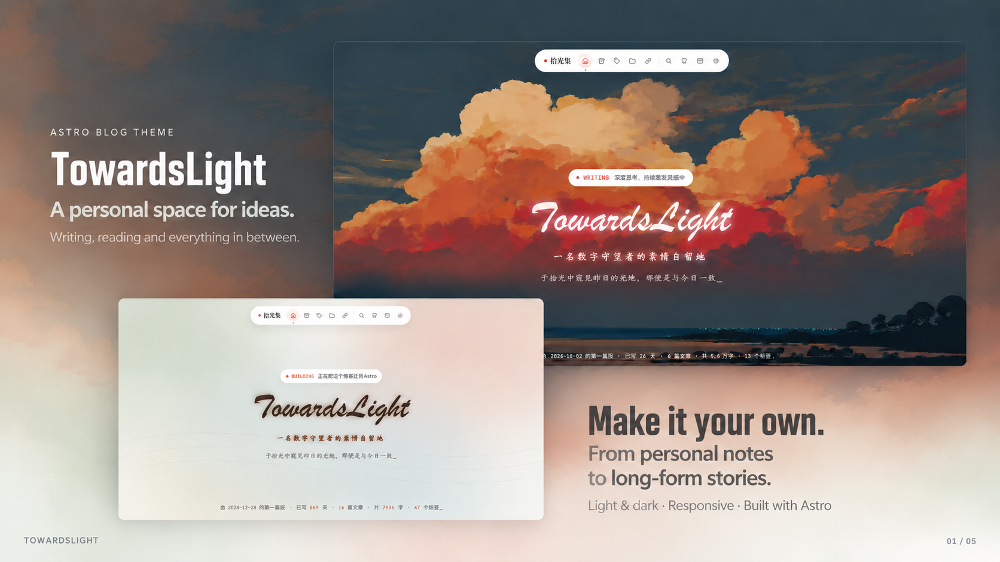
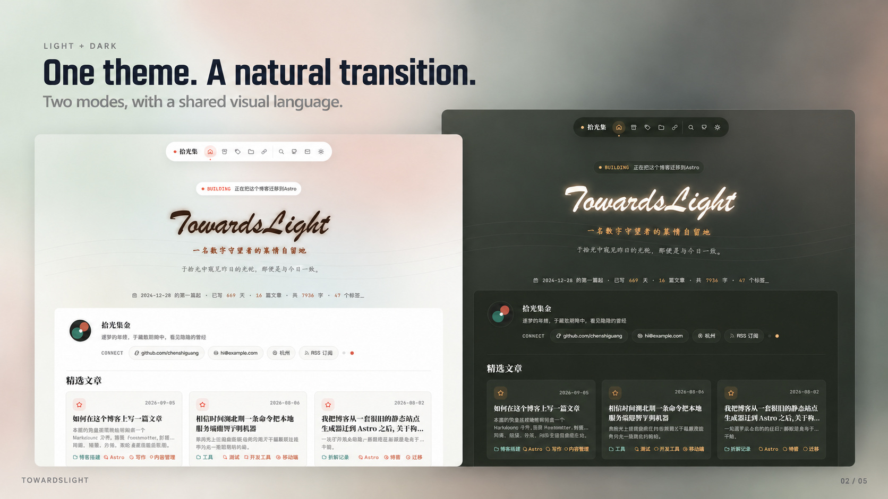
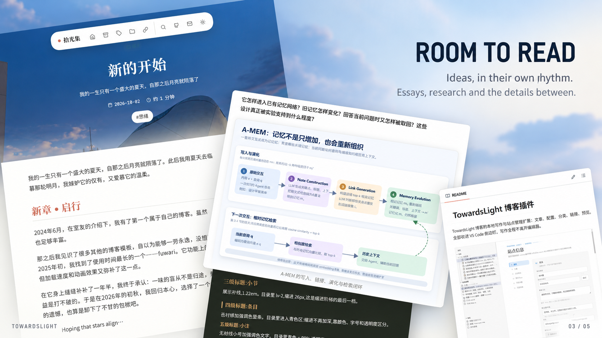
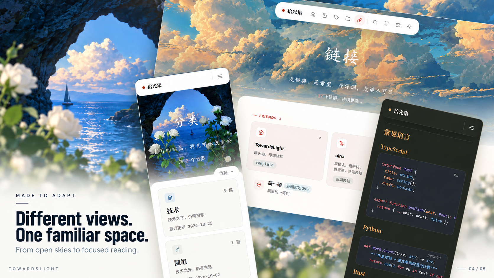
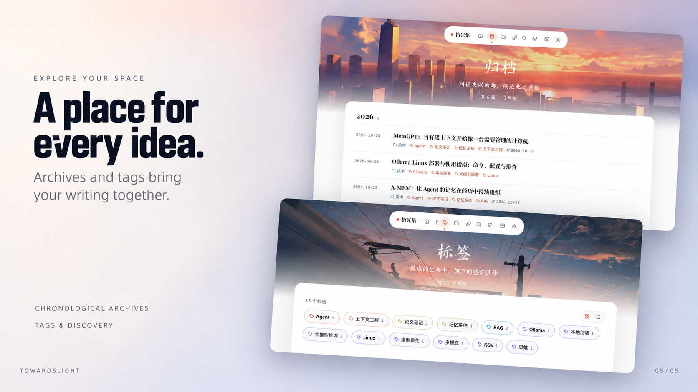

TOWARDSLIGHT / FLAT SERIES / REVISION 05
让主视觉更简洁。
01 右下角的密集文字截图已移除，替换为「Make it your own.」与简短介绍。保留两张首页展示及当前窄体标题风格；02–05 原样保留。

查看保留的 02–05







01 右下角的密集文字截图已移除，替换为「Make it your own.」与简短介绍。保留两张首页展示及当前窄体标题风格；02–05 原样保留。




